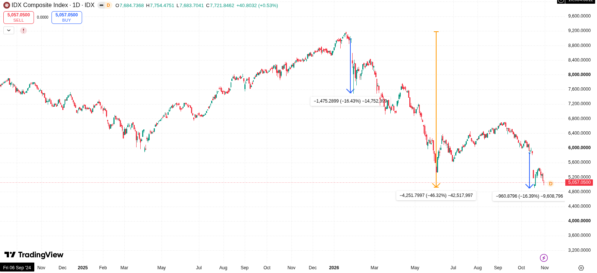

Indonesian Stock Market under a Corrupt Administration
Political background
The Indonesian government faces strong resistance from its people over political corruption, inflation, and devastating forest fires.
Indonesia officially became a democracy after the Suharto dictatorship fell in 1998. However, those in power have never given up their vested interests. Under the dictatorship, cronies, similar to the zaibatsu in Japan and the chaebol in South Korea, held power over the economy. Their companies came to control much of the resources and infrastructure that belonged to the Indonesian people. Power was concentrated among these cronies, and corruption, collusion, and nepotism, known as “KKN”, spread among them and politicians. In 1998, the Asian financial crisis fueled public anger, and the people overthrew the Suharto government.
After the country became a democracy, the Corruption Eradication Commission (KPK) was established in 2002. However, in 2019, during the Jokowi administration, the KPK was weakened and its independence and investigative powers were reduced. The KPK staff became civil servants, which meant the commission lost its independence. After Jokowi, Prabowo (Suharto was his former father-in-law) became president, and corruption has continued under his administration. Against this background, many Indonesian students have taken to the streets to protest against the government, and some of them were killed during clashes with the police.
Stock market
On the financial side, MSCI warned in January 2026 that it might downgrade Indonesian stocks, citing three main concerns. First, the free float of Indonesian stocks is much lower than in other countries. The minimum requirement was only 7.5%. Second, a handful of wealthy individuals own most of the major companies, and ownership structures are not transparent. Third, insiders use a pump-and-dump practice known as “goreng-goreng saham”.
After MSCI's warning, the Jakarta Composite Index suffered its worst two-day drop in nearly 30 years, wiping out about $80 billion in market value.
Then, in October 2026, MSCI proposed reclassifying Indonesia's stock market as standalone. This triggered a capitulation: the index plunged 11.8% on October 16 and 16% over two days.
